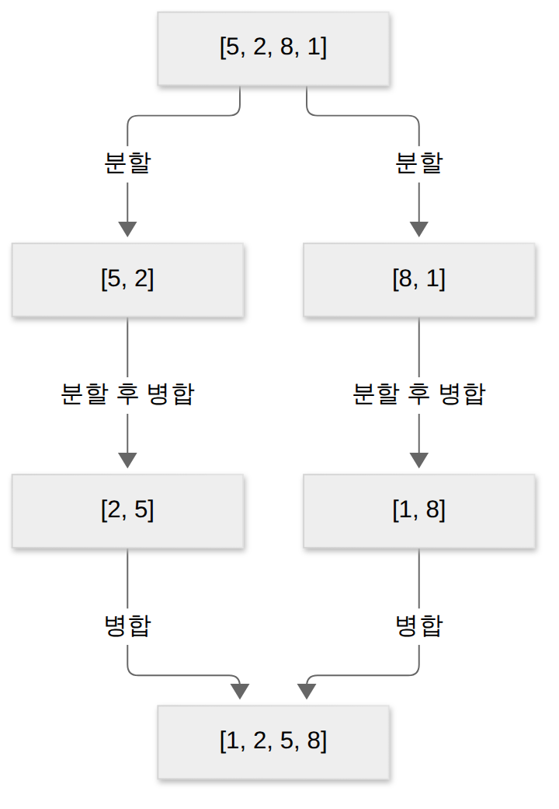
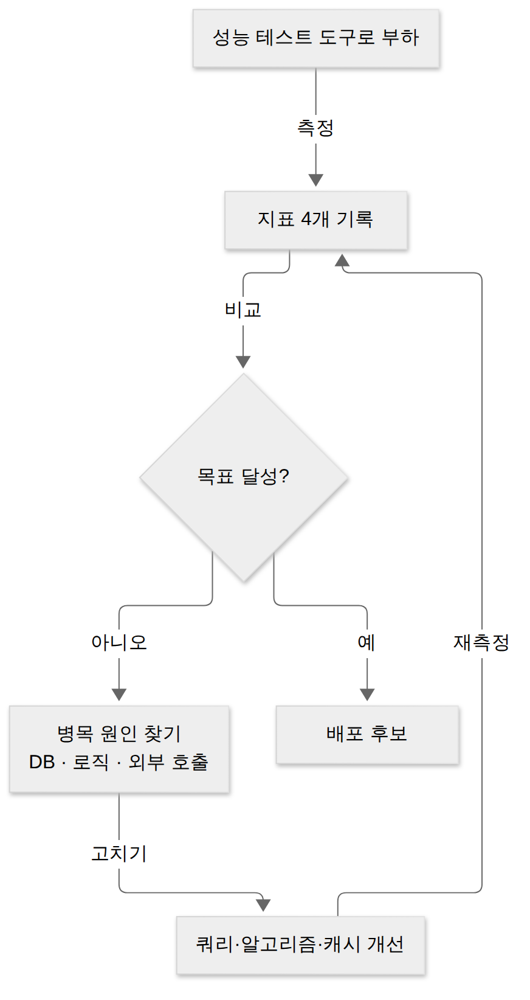
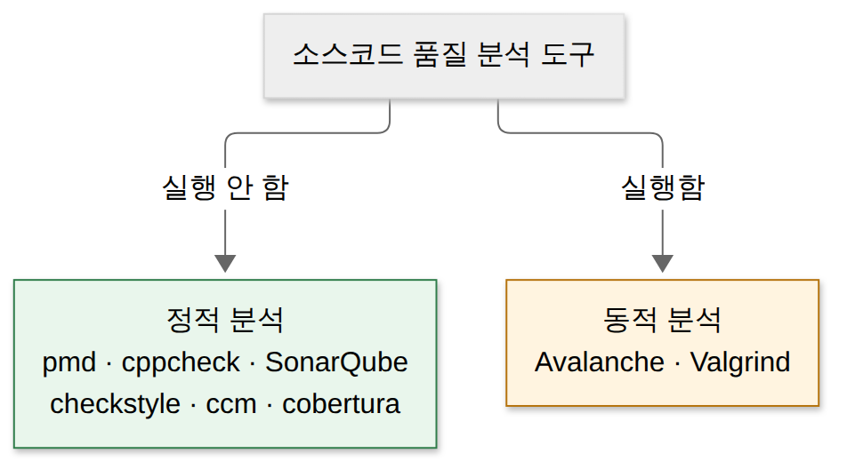
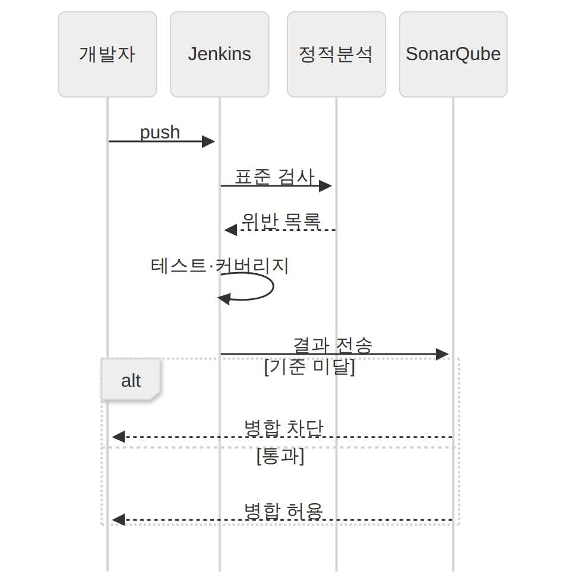
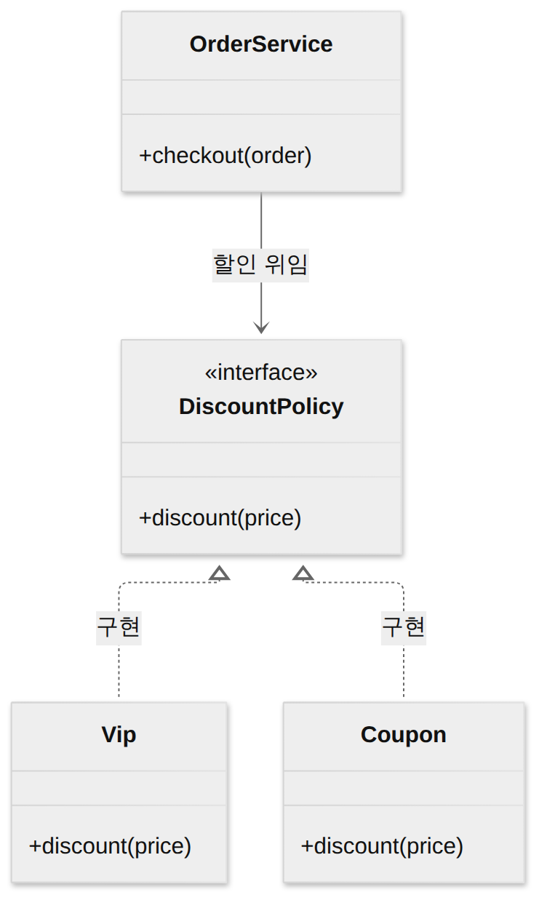

D027 · 성능 개선: 알고리즘 복잡도·소스코드 품질 분석·클린 코드
A8 A8 셋째 날, 마지막 칸이에요. 어제 D026에서 모듈을 붙이고 자동화 도구로 돌리고 결함을 끝까지 쫓았죠. 그 과정에서 “기능은 맞는데 느리다”, “돌아가긴 하는데 아무도 못 읽는다”는 결과도 함께 나와요. 오늘은 그런 문제를 알고리즘과 코드 수준에서 고치는 성능 개선을 봐요.
- 시간 복잡도(O(1)·O(log n)·O(n)·O(n log n)·O(n²))와 대표 탐색·정렬 알고리즘의 복잡도를 짝지을 수 있다
- 성능 측정 지표(처리량·응답 시간·경과 시간·자원 사용률)를 구별할 수 있다
- 소스코드 품질 분석 도구를 정적 분석(pmd·cppcheck·checkstyle 등)과 동적 분석(Avalanche·Valgrind)으로 구별할 수 있다
- 배드 코드(스파게티·외계인 코드), 클린 코드 원칙, 리팩토링의 목적을 설명할 수 있다
1. 큰 그림 — 진단서 다음은 처방전
A8 애플리케이션 테스트 관리의 세부 항목은 세 칸이에요. 테스트케이스를 설계하고(D025), 모듈을 붙여 통합 테스트를 하고(D026), 마지막으로 성능을 개선해요. 앞의 두 칸이 “무엇이 문제인가”를 찾는 일이라면, 셋째 칸은 “그래서 어떻게 고치나”예요. 테스트가 ‘느리다, 지저분하다’고 진단서를 끊었으면, 성능 개선은 처방전을 쓰는 단계예요.
처방은 네 갈래로 나뉘어요. 먼저 느린 이유를 알고리즘의 복잡도로 설명하고, 얼마나 느린지를 성능 지표로 재요. 코드가 표준을 어기거나 메모리를 새게 하는지는 소스코드 품질 분석 도구가 찾아 주고, 찾은 문제는 클린 코드 원칙에 맞춰 리팩토링으로 고쳐요. 아래 지도의 네 칸이 오늘 섹션 순서예요.
→ 이 장면의 결과물: 오늘 볼 네 갈래의 지도. 그래서 다음은 “왜 느린가”를 설명하는 가장 근본적인 도구, 알고리즘 복잡도예요.
2. 알고리즘 복잡도 — 입력이 늘면 얼마나 느려지나
같은 코드라도 노트북에서 1초 걸린 게 서버에서는 0.1초일 수 있어요. 그래서 알고리즘끼리 비교할 때는 기계에 따라 바뀌는 초 대신, 입력이 커질 때 연산이 몇 배로 늘어나는지를 봐요. 빅오는 “지금 몇 초 걸리나”가 아니라 “손님이 열 배로 늘면 줄이 얼마나 길어지나”를 묻는 표기예요.
시간 복잡도는 알고리즘이 수행하는 연산 횟수를 입력 크기 n의 함수로 나타낸 거예요. 빅오 표기법(O)은 그중 가장 빨리 커지는 항만 남기고 상수와 작은 항을 버려 최악의 경우의 상한을 나타내요. 예를 들어 3n² + 5n + 2번 연산하는 코드는 n이 커지면 n² 항이 전부를 좌우하므로 O(n²)이라고 써요.
등급별로 하나씩
O(1) 상수는 입력이 아무리 커도 연산 수가 그대로예요. 배열의 i번째 원소를 꺼내거나 해시 테이블에서 키로 값을 찾는 게 대표 예예요. O(log n) 로그는 매번 문제를 절반씩 버리는 알고리즘에서 나와요. 입력이 두 배가 돼도 연산은 한 번만 늘어나서, 백만 개도 스무 번 남짓이면 끝나요.
O(n) 선형은 입력을 처음부터 끝까지 한 번 훑는 경우로, 순차 탐색과 단일 for문이 여기예요. O(n log n) 선형 로그는 반씩 쪼개는 층이 log n개 있고 층마다 n개를 한 번씩 다루는 경우예요. 병합 정렬·힙 정렬·퀵 정렬(평균)이 여기 있고, 비교로 정렬하는 알고리즘은 평균적으로 이보다 빨라질 수 없다고 알려져 있어요.
O(n²) 제곱은 모든 원소 쌍을 한 번씩 비교할 때 나와요. 반 학생 서른 명이 서로 한 번씩 악수하면 435번, 삼백 명이면 4만 번이 넘어요. 이중 for문이 바로 이 악수 대회예요. O(2ⁿ) 지수는 원소마다 “넣는다/뺀다” 두 갈래로 모든 조합을 다 시도할 때 나오고, n이 몇십만은커녕 예순만 넘어도 현실적으로 끝나지 않아요(2^60은 초당 10억 번 계산해도 30년이 넘게 걸려요).
탐색 세 가지
순차 탐색은 처음부터 하나씩 비교해 가는 방식으로, 정렬이 필요 없는 대신 최악에는 끝까지 봐야 해서 O(n)이에요. 이진 탐색은 정렬된 배열의 가운데 값과 비교해 찾는 값이 앞쪽인지 뒤쪽인지 정하고 나머지 절반을 버리는 걸 반복해요. 두꺼운 사전에서 단어를 찾을 때 첫 장부터 넘기는 사람은 없죠. 가운데를 펴고 앞인지 뒤인지 고르는 그 습관이 O(log n)이에요.
해시 탐색은 해시 함수로 키를 저장 위치로 바로 바꿔 한 번에 찾아가므로 평균 O(1)이에요. 다만 서로 다른 키가 같은 위치로 몰리는 충돌이 심하면 느려져요. 자바의 HashMap이나 DB의 해시 인덱스가 이 방식이고, 범위 검색이 필요한 곳에는 정렬 구조(B-트리 인덱스)를 쓰는 이유도 여기서 나와요.
정렬 — 이중 반복이냐, 쪼개기냐
버블 정렬은 이웃한 두 원소를 비교해 큰 것을 뒤로 보내는 걸 반복하고, 선택 정렬은 남은 것 중 최솟값을 골라 앞자리와 바꾸고, 삽입 정렬은 원소를 하나씩 꺼내 이미 정렬된 앞부분의 알맞은 자리에 끼워 넣어요. 셋 다 바깥 반복 안에 안쪽 반복이 있어서 평균·최악 O(n²)이에요. 다만 삽입 정렬은 데이터가 거의 정렬돼 있으면 끼울 자리를 금방 찾아서 최선 O(n)까지 빨라져요.
병합 정렬은 배열을 반씩 쪼개 끝까지 내려간 뒤, 정렬된 조각 둘을 합치며 올라와요. 쪼개는 층이 log n개, 층마다 합치는 비교가 n번이라 언제나 O(n log n)이에요. 대신 합칠 때 임시 공간이 필요해요. 힙 정렬은 힙 트리에서 최댓값을 하나씩 꺼내는 방식으로 역시 언제나 O(n log n)이에요.

퀵 정렬은 피벗 하나를 골라 그보다 작은 것은 왼쪽, 큰 것은 오른쪽으로 나눈 뒤 양쪽을 다시 정렬해요. 피벗이 가운데쯤이면 반씩 나뉘어 평균 O(n log n)으로 실무에서 가장 빠른 편이에요. 출제자는 ‘퀵 정렬은 빠르다’는 이름값을 믿는 사람을 노려요. 이미 정렬된 줄에서 맨 앞 사람을 피벗으로 세우면 한쪽이 텅 비어서 퀵도 거북이가 돼요.
한 장 요약 — 위에서 설명한 탐색·정렬을 평균과 최악으로 나란히 놓으면 이래요.
| 알고리즘 | 평균 / 최악 | 한 줄 이유 |
|---|---|---|
| 순차 탐색 | O(n) / O(n) | 처음부터 하나씩 |
| 이진 탐색 | O(log n) / O(log n) | 정렬된 배열을 반씩 버림 |
| 해시 탐색 | O(1) / O(n) | 주소로 바로 감, 충돌이 몰리면 느려짐 |
| 버블 · 선택 · 삽입 정렬 | O(n²) / O(n²) | 이중 반복 (삽입만 최선 O(n)) |
| 퀵 정렬 | O(n log n) / O(n²) | 피벗이 한쪽으로 쏠리면 최악 |
| 병합 · 힙 정렬 | O(n log n) / O(n log n) | 쪼개는 층 log n × 층마다 n |
→ 이 장면의 결과물: “이 코드가 왜 느린가”를 n에 대한 식으로 말할 수 있게 됐어요. 그래서 다음 장면은 그 느림을 실제로 어떤 숫자로 재는가예요.
3. 성능 측정 지표 — 얼마나 느린지 재는 네 개의 자
복잡도는 설계 단계의 예측이고, 실제로 사용자가 느끼는 속도는 측정해 봐야 알아요. 어제 본 자동화 도구 4유형 중 셋째 칸인 성능 테스트 도구(JMeter 같은 부하 도구)가 가상 사용자를 잔뜩 만들어 요청을 쏟아붓고, 그때 아래 네 지표를 기록해요.
처리량(Throughput)은 일정 시간 동안 애플리케이션이 처리한 일의 양, 예를 들어 초당 처리한 요청 수예요. 응답 시간(Response Time)은 요청을 보낸 뒤 첫 응답이 돌아오기까지 걸린 시간이에요. 경과 시간(Turnaround Time)은 요청을 보낸 시점부터 요청한 처리가 모두 끝날 때까지 걸린 시간이에요. 자원 사용률(Resource Usage)은 처리하는 동안 CPU·메모리·네트워크 같은 자원을 얼마나 썼는지예요.
카페로 치면 응답 시간은 “주문 받았습니다”까지, 경과 시간은 음료를 손에 쥘 때까지, 처리량은 한 시간에 나간 잔 수, 자원 사용률은 바리스타와 에스프레소 머신이 얼마나 숨 가쁜지예요. 앞의 둘은 요청 하나를 따라가는 사용자 쪽 지표이고, 뒤의 둘은 시스템 전체를 보는 운영 쪽 지표예요.
한 장 요약 — 지표 네 개를 같은 카페 예로 나란히 놓아요.
| 지표 | 무엇을 재나 | 카페 예 |
|---|---|---|
| 처리량 | 단위 시간에 처리한 일의 양 | 한 시간에 나간 음료 잔 수 |
| 응답 시간 | 요청 → 첫 응답까지 시간 | “주문 받았습니다”까지 |
| 경과 시간 | 요청 → 처리 완료까지 시간 | 음료를 받을 때까지 |
| 자원 사용률 | 처리 중 CPU·메모리·네트워크 사용량 | 바리스타·머신 가동률 |
지표가 목표에 못 미치면 원인을 찾아요. 흔한 병목은 세 군데예요. DB 쪽은 커넥션을 제때 반환하지 않아 풀이 바닥나거나, 인덱스 없이 전체를 훑는 쿼리, 반복문 안에서 쿼리를 날리는 N+1 문제예요. 내부 로직은 앞 섹션의 O(n²) 이중 반복이나 큰 파일을 한 번에 읽는 처리이고, 외부 호출은 다른 시스템의 응답을 기다리다 타임아웃이 나는 경우예요. 고친 뒤에는 같은 조건으로 다시 재서 정말 나아졌는지 확인해요.

→ 이 장면의 결과물: 느림을 숫자로 재고 병목 위치를 찾았어요. 그런데 성능 문제는 대개 코드 품질 문제와 붙어 다녀요. 그래서 다음 장면은 코드를 기계로 검사하는 도구예요.
4. 소스코드 품질 분석 도구 — 실행 전에 읽을까, 실행하며 볼까
사람이 코드 리뷰로 모든 줄을 보기는 어렵고, 같은 실수를 매번 지적하는 것도 피곤해요. 소스코드 품질 분석 도구는 이 일을 기계에 맡겨, 정해 둔 코딩 표준을 지켰는지, 코드가 너무 복잡하지 않은지, 메모리가 새거나 스레드끼리 엉키는 결함이 없는지를 찾아 줘요. 어제 본 자동화 도구 4유형의 첫 칸인 정적 분석 도구가 바로 이 목록의 절반이에요.
정적 분석은 프로그램을 실행하지 않고 소스 코드 자체를 읽어 표준 위반·스타일·미사용 변수·중복·복잡도를 확인해요. 개발 초기에 결함을 일찍 찾을 수 있고, 개발 완료 시점의 품질 검증에도 써요. 동적 분석은 프로그램을 실행하면서 메모리 누수나 스레드 결함처럼 돌려 봐야만 드러나는 문제를 관찰해요.
정적 분석은 자동차를 시동 걸지 않고 설계도와 부품 목록으로 검사하는 것, 동적 분석은 시운전하며 계기판에서 기름 새는 걸 잡는 거예요. 둘은 경쟁이 아니라 순서예요. 읽어서 잡을 수 있는 건 먼저 읽어서 잡고, 돌려야 보이는 건 돌려서 잡아요.
도구 이름 — 정적 여섯, 동적 둘
정적 분석 쪽부터 볼게요. pmd는 미사용 변수, 최적화되지 않은 코드처럼 결함을 부를 만한 코드를 찾아요. cppcheck는 C/C++ 코드의 메모리 누수·오버플로 같은 문제를 실행 없이 분석해요. SonarQube는 중복 코드·복잡도·코딩 설계 문제를 분석해 대시보드로 보여 주고, 플러그인으로 다른 도구를 붙여 확장할 수 있어요.
checkstyle은 자바 코드가 정한 코딩 표준을 지켰는지 검사하고, ccm은 여러 언어의 코드 복잡도를 재요. cobertura는 자바 코드의 복잡도와 테스트 커버리지를 측정해요. 커버리지는 테스트가 돌아야 나오는 숫자라 헷갈리기 쉽지만, 수험서 분류에서는 정적 분석 목록에 들어 있어요.
동적 분석 쪽은 둘뿐이에요. Valgrind는 프로그램을 실행하면서 메모리 누수·잘못된 메모리 접근·스레드 결함을 찾아요. C/C++ 개발자라면 한 번쯤 돌려 봤을 그 도구예요. Avalanche는 Valgrind 프레임워크를 바탕으로 프로그램을 실행하며 결함과 취약점을 찾는 도구예요. 도구 이름 문제에는 진짜 같은 가짜 이름이 한 번씩 섞여요. 동적 쪽은 Valgrind·Avalanche 딱 둘이라, 나머지가 낯설면 정적 목록부터 대조하면 돼요.

한 장 요약 — 도구마다 무엇을 보는지 나란히 놓으면 이래요.
| 도구 | 분류 | 주로 보는 것 |
|---|---|---|
| pmd | 정적 | 미사용 변수 등 결함 유발 코드 |
| cppcheck | 정적 | C/C++ 메모리 누수·오버플로 |
| SonarQube | 정적 | 중복 코드·복잡도·설계, 대시보드 |
| checkstyle | 정적 | 자바 코딩 표준 준수 |
| ccm | 정적 | 여러 언어의 코드 복잡도 |
| cobertura | 정적 | 자바 복잡도·테스트 커버리지 |
| Valgrind | 동적 | 실행 중 메모리 누수·스레드 결함 |
| Avalanche | 동적 | Valgrind 기반 결함·취약점 |
현업에서는 이 도구들을 CI 파이프라인에 붙여요. D024에서 본 Jenkins가 push마다 checkstyle·pmd로 표준을 검사하고, 테스트와 커버리지 측정을 돌린 뒤, SonarQube가 정한 기준(품질 게이트)에 못 미치면 병합을 막아요. 사람이 매번 “여기 공백 하나 더”라고 쓰지 않아도 되는 이유예요.

→ 이 장면의 결과물: 도구가 “이 코드는 복잡하다, 중복이다, 메모리가 샌다”는 목록을 줬어요. 그래서 다음 장면은 그 목록을 받아 코드를 어떻게 고치는가예요.
5. 배드 코드 → 클린 코드 → 리팩토링
배드 코드
배드 코드(Bad Code)는 다른 개발자가 로직을 이해하기 어렵게 작성된 코드예요. 당장은 돌아가지만, 고칠 때마다 시간이 들고 새 결함을 부르기 때문에 성능 개선과 유지보수의 적이에요. 시험에 나오는 대표 유형은 셋이에요.
스파게티 코드는 제어 흐름이 서로 얽혀 있어서, 접시 위 면발처럼 한 가닥을 따라가다 보면 다른 가닥과 엉켜 끝을 찾을 수 없는 코드예요. goto나 깊게 중첩된 조건문, 여기저기서 서로를 부르는 함수가 원인이에요. 외계인 코드는 아주 오래됐거나 작성자도 참고 문서도 없어 유지보수가 매우 어려운 코드예요. git blame을 눌렀더니 10년 전 퇴사자 이름이 뜨고 주석은 한 줄도 없다면, 그 코드는 이 행성 것이 아니에요.
중복 코드는 같은 로직을 여러 곳에 복사해 둔 코드예요. 규칙이 바뀌면 모든 복사본을 찾아 고쳐야 하고, 하나라도 빠뜨리면 그 자리에 버그가 남아요.
한 장 요약 — 배드 코드 셋의 증상과 처방이에요.
| 유형 | 증상 | 처방 |
|---|---|---|
| 스파게티 코드 | 제어 흐름이 얽혀 따라갈 수 없음 | 구조적 흐름으로, 함수 분리 |
| 외계인 코드 | 오래되고 작성자·문서 없음 | 테스트로 동작 고정 후 문서화·리팩토링 |
| 중복 코드 | 같은 로직 복사본 여럿 | 공통 메서드·모듈로 추출 |
클린 코드 5원칙
클린 코드(Clean Code)는 중복 없이 의존성을 줄이고, 누구나 쉽게 읽고 수정할 수 있게 작성된 코드예요. 배드 코드의 반대말이고, 원칙은 다섯 개예요.
가독성은 누구든 코드를 쉽게 읽게 작성하는 원칙으로, 이해하기 쉬운 이름과 일관된 들여쓰기를 써요. 단순성은 한 번에 한 가지를 처리하게 만드는 원칙으로, 클래스·메서드·함수를 최소 단위로 나눠요(자료에 따라 ‘단위성’이라고도 불러요). 의존성 배제는 코드가 다른 모듈에 미치는 영향을 최소화해서, 한 곳을 고쳐도 다른 곳이 깨지지 않게 하는 원칙이에요.
중복성 최소화는 중복된 코드를 지우고 공통 코드로 모으는 원칙이에요. 추상화는 상위 클래스·메서드·함수에서는 무엇을 하는지만 간략히 보여 주고, 상세한 내용은 하위 클래스·메서드·함수에서 구현하는 원칙이에요. 신문 1면 제목만 보고도 무슨 일인지 알고, 자세한 건 안쪽 지면에서 읽는 구조와 같아요.
이 원칙은 D012의 모듈화와 그대로 이어져요. 단순성은 한 모듈이 한 가지 일만 하는 응집도↑, 의존성 배제는 모듈끼리 덜 기대는 결합도↓를 코드 줄 단위로 옮긴 말이에요.
한 장 요약 — 다섯 원칙의 뜻과 지키는 방법이에요.
| 원칙 | 뜻 | 지키는 방법 |
|---|---|---|
| 가독성 | 누구나 쉽게 읽음 | 의도가 드러나는 이름, 일관된 들여쓰기 |
| 단순성 (단위성) | 한 번에 한 가지 처리 | 클래스·메서드를 최소 단위로 분리 |
| 의존성 배제 | 다른 모듈에 주는 영향 최소 | 인터페이스로 느슨하게 연결 |
| 중복성 최소화 | 같은 코드 없애기 | 공통 메서드로 추출 |
| 추상화 | 상위는 간략, 상세는 하위 | 상위 클래스는 무엇을, 하위 클래스는 어떻게 |
소스 코드 최적화와 리팩토링
소스 코드 최적화는 나쁜 코드를 배제하고 클린 코드로 작성하는 일이에요. 구체적인 기법은 이래요. 클래스는 하나의 역할·책임만 맡기고, 이름은 기능과 의도가 드러나게 지어요(클래스는 명사, 메서드는 동사). 클래스 사이 의존은 인터페이스를 거치게 해 느슨하게 만들고, 주석은 꼭 필요한 곳에만 달아요.
리팩토링(Refactoring)은 소프트웨어의 외부 동작은 바꾸지 않으면서 내부 구조를 개선하는 작업이에요. 목적은 유지보수성과 가독성을 높이고, 구조를 정리하는 과정에서 숨은 버그를 찾고, 장기적으로 개발 속도를 높이는 거예요. 리팩토링은 옷장 정리예요. 옷(기능)은 하나도 버리거나 새로 사지 않고, 다음에 찾기 쉽게 개는 것뿐이에요. 그래서 리팩토링 전후에 같은 테스트를 돌려 결과가 같은지 확인하는 게 기본이에요.
아래는 중복 코드를 메서드 추출로 정리한 예예요. 할인 규칙이 바뀌어도 이제 discounted 한 곳만 고치면 되고, 두 메서드가 돌려주는 결과는 전과 똑같아요.
// 전: 할인 계산이 두 메서드에 복붙 (중복 코드)
int checkout(Order o) {
int p = o.price();
if (o.isVip()) p = p * 90 / 100; // 같은 로직
...
}
int estimate(Order o) {
int p = o.price();
if (o.isVip()) p = p * 90 / 100; // 같은 로직
...
}
// 후: 메서드 추출 → 한 곳만 고치면 됨 (외부 결과는 그대로)
int discounted(Order o) {
return o.isVip() ? o.price() * 90 / 100 : o.price();
}
int checkout(Order o) { int p = discounted(o); ... }
int estimate(Order o) { int p = discounted(o); ... }한 단계 더 가면 할인 규칙 자체를 인터페이스 뒤로 숨겨요. 주문 서비스는 “할인해 줘”라고만 부르고, VIP 할인(Vip)인지 쿠폰 할인(Coupon)인지는 구현 클래스가 결정해요. 새 할인이 생겨도 주문 서비스는 고치지 않아도 되니 의존성 배제와 추상화를 동시에 지킨 구조예요.

→ 이 장면의 결과물: 느리고 지저분한 코드를 재고, 검사하고, 고치는 한 바퀴를 끝냈어요. 이걸로 A8 테스트 관리 세 칸을 다 돌았어요. 남은 시간은 예정된 오답 복습이에요.
6. 오답 복습 — 스크럼 이벤트와 역할
오늘 다시 볼 두 문항은 같은 스크럼 영역이지만 묻는 축이 달라요. 하나는 이벤트(D009), 하나는 역할(D003·D025)이에요. 스프린트는 보통 2~4주 한 바퀴로, 시작할 때 스프린트 계획에서 이번에 할 일을 고르고, 기간 동안 매일 짧게 일일 스크럼으로 진행 상황과 막힌 점을 맞추고, 끝에 스프린트 리뷰로 만든 결과물을 시연하고, 회고로 일하는 방식을 돌아봐요.
역할 쪽에서 제품 책임자(PO)는 무엇을 어떤 순서로 만들지, 즉 백로그와 우선순위를 책임져요. 개발자는 실제로 동작하는 증분을 만들어요. 스크럼 마스터는 팀이 스크럼 규칙대로 일하도록 코칭하고 방해 요소를 치워요. 스크럼 마스터는 팀의 제설차예요. 운전대를 잡고 어디로 갈지 정하는 건 제품 책임자, 길 위의 눈을 치우는 건 스크럼 마스터예요.
한 장 요약 — 헷갈리는 짝을 가르는 질문이에요.
| 헷갈리는 짝 | 가르는 질문 |
|---|---|
| 스프린트 계획 vs 일일 스크럼 | 스프린트에 한 번인가, 매일인가? |
| 스프린트 리뷰 vs 회고 | 결과물(제품)을 보나, 일하는 방식(프로세스)을 보나? |
| 제품 책임자 vs 스크럼 마스터 | 무엇을 만들지 정하나, 팀이 잘 일하게 돕나? |
확인 문제 (채점 완료 · 6/7)
- 다음 정렬 알고리즘 중 평균 시간 복잡도와 최악 시간 복잡도가 모두 O(n²)인 것은?
정답·해설 (오답)
③ 버블 정렬. 인접한 두 값을 비교·교환하는 이중 반복이라 평균·최악 모두 O(n²)예요. 고른 ④ 퀵 정렬은 평균 O(n log n)이고 피벗이 계속 한쪽으로 쏠릴 때만 최악 O(n²)라서 “모두”에 걸려요. 힙·병합은 평균·최악 모두 O(n log n). - C 프로그램을 실제로 실행하면서 해제되지 않은 메모리와 스레드 사이의 결함을 찾아 주는 소스코드 품질 분석 도구는?
정답·해설
② Valgrind. 실제로 실행하며 메모리 누수·스레드 결함을 찾는 동적 분석 도구예요. 나머지는 실행 없이 코드를 읽는 정적 분석 도구. - 웹 서비스 성능 측정에서, 사용자가 요청을 보낸 시점부터 요청한 처리가 모두 끝날 때까지 걸린 시간을 가리키는 지표는?
정답·해설
④ 경과 시간(Turnaround Time). 요청부터 처리 완료까지예요. ② 응답 시간은 첫 응답이 올 때까지라 다르다는 게 함정. - (누적) 럼바우 OMT 분석에서 “입력값이 어떤 처리를 거쳐 어떤 출력값으로 바뀌는가”를 자료 흐름도(DFD)로 표현하는 모델링은?
정답·해설
③ 기능 모델링. 입력 → 처리 → 출력을 DFD로 그려요. 객체 모델링 = 객체 다이어그램, 동적 모델링 = 상태 다이어그램. (D004-1 졸업) - (누적) CASE 도구를 분석 단계에 도입했을 때 기대할 수 있는 효과로 거리가 먼 것은?
정답·해설
① 도구가 요구사항을 스스로 도출해 준다. CASE는 정의·명세를 돕는 도구일 뿐 면담 같은 도출 활동은 대신 못 해요. (D005-2 졸업) - (오답 재확인) 스프린트 기간 동안 매일 같은 시간에 15분 이내로 모여 진행 상황과 막힌 점을 공유하고 다음 하루 계획을 맞추는 스크럼 이벤트는?
정답·해설
④ 일일 스크럼. 매일 15분, 진행·막힌 점 공유. (D009-4 재확인 통과) - (오답 재확인) 다른 부서의 잦은 업무 요청 때문에 개발팀 작업이 계속 끊긴다. 이런 방해 요소를 걷어 내고, 팀이 스크럼 규칙대로 일하도록 코칭하는 역할은?
정답·해설
③ 스크럼 마스터. 방해 요소 제거·스크럼 코칭. PO는 백로그·우선순위. (D025-3 재확인 통과)
고른 뒤 답안 복사 → 디스코드 공부 채널에 붙여넣기 하면 돼요.
답장: 정처기 D027: 1)번호 2)번호 3)번호 4)번호 5)번호 6)번호 7)번호
내일 D028은 1과목 마무리예요. A1~A9에서 빠진 세세항목이 없는지 점검하고, 일요일 D030 종합 복습을 준비해요. 어제 D026 답장도 아직 기다리고 있어요. 편할 때 한꺼번에 보내 주세요.